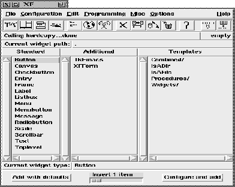

This procedure is automatically called when XF is started. The procedure pops up the main XF window. This window provides access to the functionality.

Figure: The procedure XFProcMain
The main window is structured in several parts. At the top, there is a menubar and an iconbar. Both call the procedures that implement the various dialogs. They can be configured by the user.
Below the iconbar, a status line shows the status of the program, and a small label shows the status of the cut buffer.
The label (Current widget path:) has a menu attached to it, that contains a list of all toplevels. This menu is used to show/display the toplevels. The widget path right beside this label has menus attached to the dots, containing all children of the widget left from the dot. The user can navigate through the widget tree with these menus.
The three lists that occupy most of the space of the main window, contain the class names (and template names) that can be inserted into the application. A double click with the left mouse button inserts the widget with default parameters. A double click with the right mouse button inserts the widget after calling a parameter dialog. The two buttons at the bottom do the same as the double clicking. With the slider, the number of inserted widgets can be selected.
The left list contains the widgets that are part of the standard Tk distribution. The middle list contains additional widgets that have been added to the interpreter, and the right list contains the templates. Templates are complex widget structures and procedures that can be inserted and used as if the user wrote them himself.